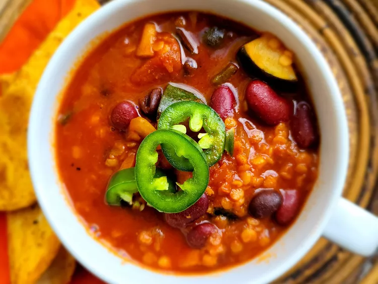

Vegetarian Red Lentil Chilli

Description
"The red lentils give this chili texture and protein. It's loaded with
fresh vegetables, packed with flavor, and has just a tiny bit of heat from
the fresh jalapenos."
Ingredients
- 2 tablespoons grapeseed oil
- 2 carrots, chopped
- 1 zucchini, cut into bite-size pieces
- 1 medium onion, chopped
- 1 medium poblano pepper, chopped
- 3 tablespoons chilli powder, divided
- 3 tablespoons cumin, divided
- 1 tablespoon smoked paprika
- 4 cloves garlic, minced
- 1 fresh jalapeno pepper, seeded and diced
- 2 tablespoons tomato paste
- 2 (14.5 ounce) cans diced tomatoes with juice
- 2 cups vegetable broth
- 1 (15 ounce) can kidney beans, rinsed and drained
- 1 (15 ounce) can black beans, rinsed and drained
- 1 cup red lentils, rinsed and drained
Return to home